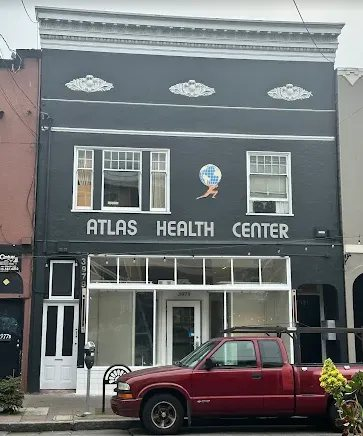
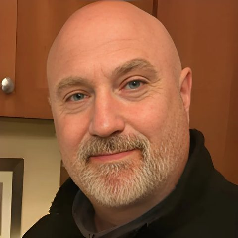
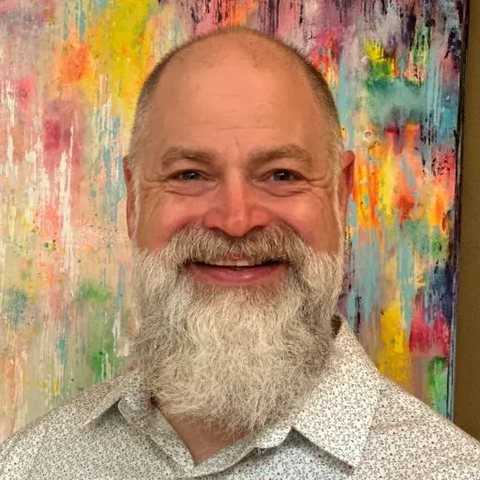
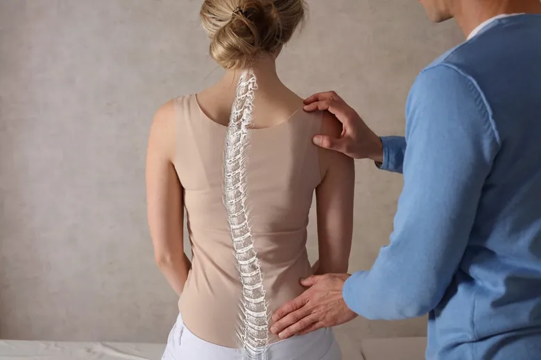
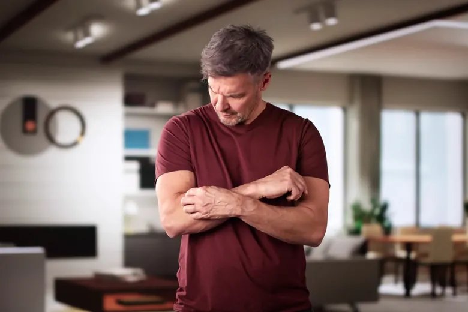

Russian Hill
4.9 · 682 Google reviewsVan Ness office
2305 Van Ness Avenue, Suite B
San Francisco, CA 94109
Mon to Fri from 9:00 AM (hours vary by day)
Sat 9:00 AM to 12:00 PM
Our 24th Street office brings gentle, hands-on chiropractic care to Noe Valley and the rest of San Francisco. Care for all ages, digital X-rays on site, and a team that takes time to understand what is going on.

Call or text (415) 775-7500
info@atlashealthcenter.net
| Monday to Friday | 8:00 AM to 6:00 PM |
| Saturday | 9:00 AM to 2:00 PM |
| Sunday | Closed |

Dr. Henry Oyharcabal, DCFounder, Doctor of Chiropractic
Dr. Brian Flannery, DCDoctor of ChiropracticSpecific spinal adjustments tailored to what your spine actually needs, not a one-size-fits-all routine, with movement guidance so the relief holds between visits.
Guided exercise and movement coaching in San Francisco, paired with chiropractic care, so a stiff or sore area can tolerate the work, sport, and day you actually have.
Care in San Francisco after a crash, a fall, or another sudden injury, with notes from the first visit. The first job is an examination, including whether you should be seen medically before we start.
Gentle, specific chiropractic care for kids, from infants to teenagers, matched to a small and growing body and always moving at a child's pace.
Pregnancy asks a lot of your back and hips. Our prenatal care is low-force, comfortably positioned, and shaped around exactly where you are, so you can move and rest a little easier.
Start with a conversation and a careful exam, with digital X-rays on site if you need them.
Most back pain has a reason, and finding it beats guessing at it. Chiropractic care at Atlas Health Center is built around how you actually move, sit, and sleep.
The desk, the phone, and the pillow you actually use matter more than most advice admits. Care in San Francisco that looks for why your neck hurts, then plans around your day.
A lot of headaches start in the neck and shoulders. Chiropractic care in San Francisco that works there first, with a simple plan around your triggers and your days.

A spine with a curve can still move and feel better. Hands-on care in San Francisco that works alongside the medical team monitoring the curve itself.
A sore shoulder is rarely coming from the shoulder alone. Chiropractic care in San Francisco that looks at the shoulder, the neck, and the upper back together.

Pain, tingling, or numbness that travels down a limb usually starts at the spine rather than where you feel it. Hands-on care in San Francisco that looks where the problem begins.
“Dr Wong is very attentive and cares about my well being. He takes time to learn about his pts needs.”
“I went in to see Dr Henry for a back and hip adjustment… the adjustment was quick and smooth. My stiffness and discomfort is gone
Thanks Henry !”
“Dr. Pham is great. Fast and easy assessment. Adjustments are quick and effective. Thank you!”
“Best chiropractors in the bay! Exceptional staff and doctors that genuinely care about people and their alignment needs! 10 out of 10 would highly recommend!”
“I love that they are always available with the drop in option, since my schedule is unpredictable”
“Awesome!!!
Fixed me up from a stiff board to a dancing Barishnikov!!!”
A specific, controlled movement applied to a joint that has stiffened and stopped moving the way it should. Restoring that movement takes pressure off the irritated tissue around it and lets the area settle. The force is matched to you rather than to a fixed routine, so an adjustment for a 70-year-old and one for an athlete do not look the same.
Usually not. Most people describe pressure and a quick movement, often with an audible release, and feel looser straight afterwards. If an area is already very irritated it can be briefly tender, and some people feel mildly achy the next day, which settles. Nothing here should have you bracing yourself, and if it does, tell us and we change the approach.
A first visit takes longer because most of it is the conversation and the examination rather than the adjustment. Follow-up visits are usually short. We would rather use the first appointment working out whether we can help than rushing you onto the table.
It depends on the problem, how long it has been going on, and how you respond, so anyone who gives you a number before examining you is guessing. We give you a realistic range after the first visit and review it as we go. If it is not helping, we will say so rather than keep booking you in.
Van Ness office
2305 Van Ness Avenue, Suite B
San Francisco, CA 94109
Mon to Fri from 9:00 AM (hours vary by day)
Sat 9:00 AM to 12:00 PM
Saratoga Sunnyvale Road
12384 Saratoga Sunnyvale Rd
Saratoga, CA 95070
Mon, Wed, Fri 9AM to 1PM and 3PM to 6PM
Tue 9:00 AM to 12:00 PM
Foothill Boulevard
21565 Foothill Blvd
Hayward, CA 94541
Mon to Fri, hours vary by day
Closed Sat and Sun
A new Atlas Health Center office is on the way. Address and hours will be posted here when it opens.
Tell us a little about what is going on and which office suits you. The team will call to set a time that works.
Prefer to talk now? Call or text (415) 775-7500.